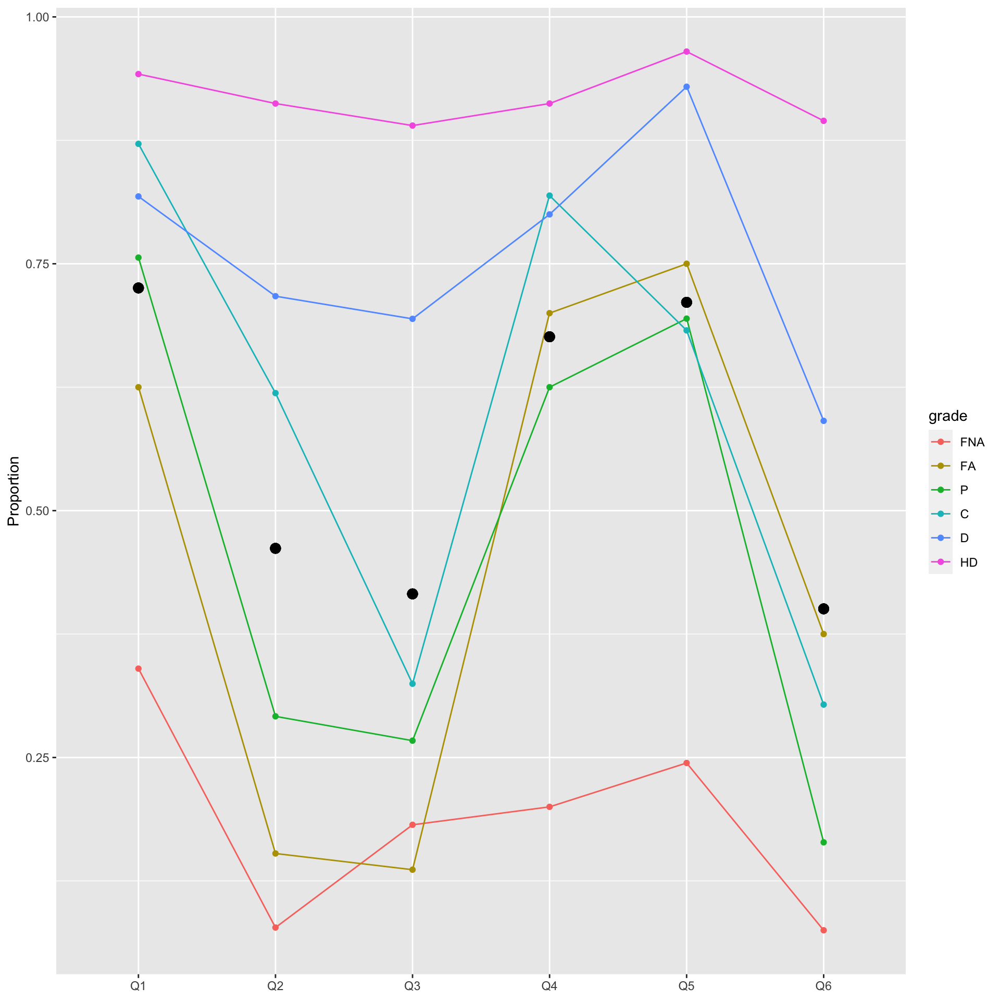

exam_plotting.Rmdpacman::p_load(tidyverse, examMarkR)
SMI_2018_marks_clean #> # A tibble: 62 x 26 #> ID A1 A2 A3 A4 A5 P OQ01 OQ02 OQ03 OQ04 OQ05 OQ06 #> <chr> <dbl> <dbl> <dbl> <dbl> <dbl> <dbl> <dbl> <dbl> <dbl> <dbl> <dbl> <dbl> #> 1 1 0.973 1 0.917 0.969 0.978 9.24 1 1 1 1 1 1 #> 2 2 1 0.905 0.95 0.878 0.913 8.29 1 1 1 0.75 0.667 1 #> 3 3 1 0.929 0.967 0.694 0.891 7.62 1 1 0.5 0.75 0.667 0.333 #> 4 4 1 0.929 0.983 0.663 0.957 8.29 1 1 0 0 0.667 1 #> 5 5 1 0.929 0.833 0.776 0.870 9.14 1 1 1 0.75 1 1 #> 6 6 0.973 0.905 1 0.929 0.891 9.14 0.833 1 0.5 1 1 1 #> 7 7 0 0.929 0.783 0.837 0.870 8.86 1 0.667 0.5 1 0.667 0.333 #> 8 8 0.865 0.976 0.967 0.867 0.957 10.2 1 1 1 1 1 1 #> 9 9 0.932 0.952 1 1 0.957 10.2 1 1 1 1 1 1 #> 10 10 0.973 0.988 1 1 0.978 9.24 1 1 1 1 1 1 #> # … with 52 more rows, and 13 more variables: OQ07 <dbl>, OQ08 <dbl>, Q1 <dbl>, #> # Q2 <dbl>, Q3 <dbl>, Q4 <dbl>, Q5 <dbl>, Q6 <dbl>, E <dbl>, A <dbl>, #> # OQ <dbl>, Total <dbl>, grade <fct>
exam_plot_assessment()
This is the first one. It will give an over view of the assessment parts of a course for each student.
SMI_2018_marks_clean %>% exam_plot_assessment("^E$|^A$|^OQ$", name = ID, grade = grade)
exam_plot_grades()
This one gives the proportion for each grade.
SMI_2018_marks_clean %>% exam_plot_grades(grade)
exam_plot_profile()
This idea of this plot is to examine if the exam works. By this, we want to see two things:
SMI_2018_marks_clean %>% exam_plot_profile("^Q", grade)

exam_plot_norm()
The final one is to compare the result from the raw marks and the scaled marks.
SMI_2018_marks_clean %>% mutate( norm_mark = exam_norm_linear(Total, tibble(x = 45, y = 50)) ) %>% exam_plot_norm(Total, norm_mark)